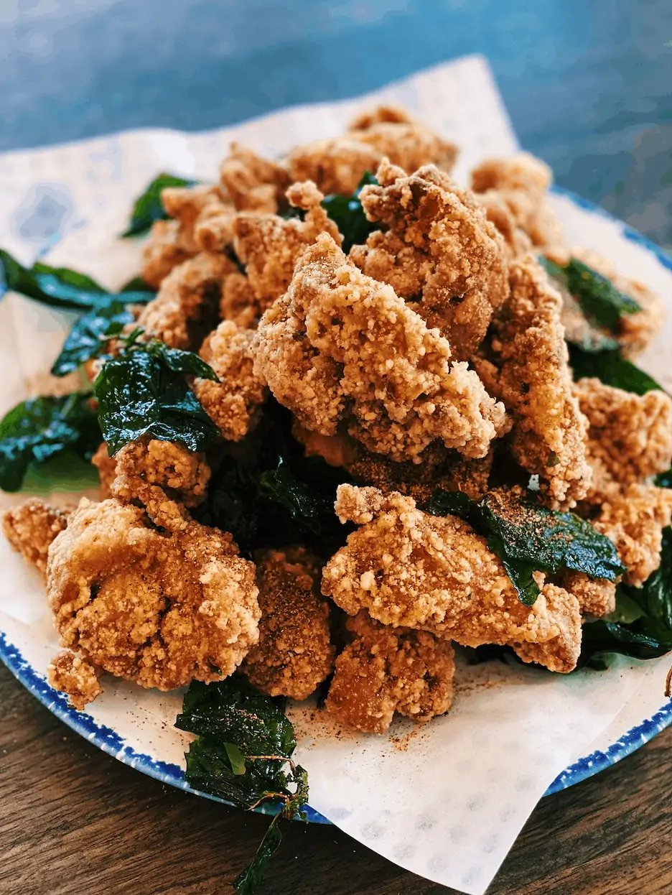

Taiwanese Popcorn Chicken
Home

Description:
Taiwanese popcorn chicken is a popular street food known for its crispy, bite-sized pieces of marinated chicken, deep-fried with a light, flavorful coating. It's typically seasoned with five-spice powder, garlic, and Thai basil leaves, giving it a bold, aromatic crunch that's both savory and slightly peppery.
Ingredients:
- 2 lbs beef short ribs (LA-style, flanken cut)
- 1/2 cup soy sauce
- 1/4 cup brown sugar
- 2 tbsp sesame oil
- 2 tbsp mirin (or rice wine)
- 1 Asian pear (or 1/2 a ripe Bosc pear), grated
- 1/2 onion, grated
- 4 cloves garlic, minced
- 1-inch piece of ginger, minced
- 1 tbsp sesame seeds
- 1/2 tsp black pepper
- 2 green onions, chopped
Instructions:
- Rinse short ribs in cold water and pat dry.
- In a bowl, combine soy sauce, brown sugar, sesame oil, mirin, grated pear, onion, garlic, ginger, sesame seeds, and black pepper to make the marinade.
- Place the ribs in a large resealable bag or dish and pour the marinade over them. Ensure they’re well coated, then refrigerate for at least 4 hours (preferably overnight).
- Remove from marinade and grill over medium-high heat for 3–5 minutes per side, until nicely charred and cooked through.
- Garnish with green onions and sesame seeds before serving.